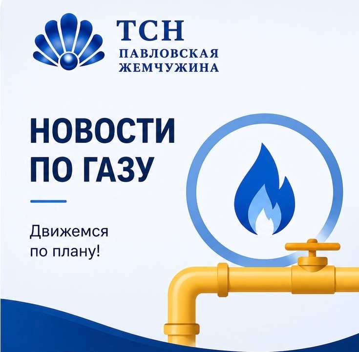

Новости по газу: текущий статус работ
Получена документация по газопроводу и проведены переговоры с подрядчиками, участвовавшими в строительстве сетей. Сейчас проводится актуализация документации для следующего этапа — постановки газопровода на учёт.
Подробнее +
Что уже сделано
- Получена документация по газопроводу.
- Проведены переговоры с подрядчиками, участвовавшими в строительстве газовых сетей поселка.
Текущий этап
Проводится актуализация газовой документации. После этого Правление сформирует пакет документов для постановки газопровода на учёт в АО «Газпром газораспределение Ленинградская область» как собственник сетей.
Что дальше
- запуск газовой инфраструктуры;
- подключение собственников, которым это необходимо;
- дальнейшая эксплуатация газового хозяйства.
Срок
Задача — до конца августа завершить актуализацию проекта сетей и перейти к этапу регистрации.